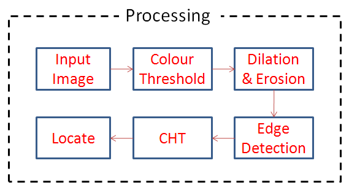
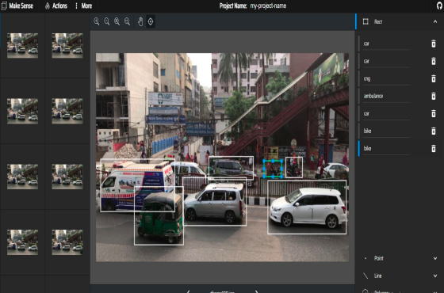

Introduction: Tackling Water Scarcity in Coastal Bangladesh
Water is a fundamental human right, yet access to safe drinking water remains a major issue in coastal Bangladesh. Although the country has made significant progress with over 97% of the population gaining access to improved water sources by 2013, only 34.5% of people actually have access to water that is safe for drinking. In coastal areas, this situation is particularly dire due to the presence of saline water in surface water bodies and groundwater reserves. The people in these regions are forced to rely on alternatives, as traditional water sources are not only scarce but also contaminated.
Rainwater harvesting (RWH) has emerged as a highly promising solution to address the growing water scarcity in the coastal regions of Bangladesh. These areas, often struggling with contamination and the salinization of their traditional water sources, require innovative methods to provide clean, usable water. RWH is a sustainable method of collecting and storing rainwater for later use, especially in regions where access to other freshwater sources is either limited, seasonal, or entirely absent. This system captures rainwater from roof surfaces or other catchment areas, channels it into a storage reservoir, and later makes it available for essential household activities like drinking, cooking, and cleaning.
Bangladesh's coastal areas, with their pronounced and distinctive seasonal rainfall patterns, present a unique opportunity for implementing RWH on a broader scale. The monsoon season, which brings significant rainfall, provides an abundant yet underutilized source of water that can be captured and stored. However, this approach's effectiveness depends largely on designing the RWH system properly, especially when determining the optimal size for the storage reservoir. The tank size is a critical component of the system's efficiency—if the tank is too small, it will not capture enough water to meet the household's needs during the dry season. Conversely, if the tank is too large, it will result in unnecessary construction costs and underutilization, making the system economically inefficient. To solve this challenge, this paper introduces the development of a Graphical User Interface (GUI) specifically designed to aid users in determining the appropriate storage tank size for their households. The GUI tool simplifies the complex process of calculating tank size by considering various factors such as household water demand, roof area, and local precipitation patterns. It offers a tailored approach that takes into account the specific conditions of coastal Bangladesh, ensuring that households can maximize the benefits of RWH while minimizing costs and water wastage. This tool marks a significant advancement in making RWH more accessible and effective for widespread use in water-scarce regions.

Challenges in Rainwater Harvesting (RWH)
Rainwater harvesting might appear straightforward—collecting rainwater during periods of rainfall and storing it for future use—but designing a truly effective and reliable system is far more complex. While the basic concept is simple, developing a system that can consistently meet the needs of a household requires careful consideration of numerous dynamic factors. Among these, the size of the storage tank is perhaps the most crucial. The storage reservoir must be carefully sized to ensure that it can capture and store enough water to meet demand during dry periods while avoiding unnecessary costs associated with over-sizing.
The success of any RWH system hinges on the balance between the supply of water—determined by rainfall—and the demand for water, which varies based on household consumption. However, these two factors are highly variable across different regions, and even among individual households. In coastal Bangladesh, the variability of rainfall adds another layer of complexity. Rainfall in these areas does not follow a consistent, predictable pattern. Instead, it fluctuates significantly both seasonally and annually, creating periods of both heavy downpours and drought. Simply calculating an average tank size based on historical rainfall patterns may lead to system failures, especially during unexpectedly dry periods when water is needed most.
In addition to unpredictable precipitation, household water demand is not static. It can fluctuate over time due to changes in family size, lifestyle adjustments, or shifts in water conservation habits. A household may initially have low water usage, but as the family grows or activities increase, so does the water demand. Without a system that can adapt to these changes, there is a risk that the RWH system will either underperform during periods of high demand or become inefficient during periods of low demand.
To address these challenges, this paper presents a sophisticated dynamic model designed to account for both **volumetric reliability** and **time reliability**. Volumetric reliability refers to the percentage of the household's total water demand that can be met by the RWH system. In contrast, time reliability measures how many days the system can fully satisfy the household's daily water requirements. These two metrics provide a more comprehensive understanding of how well the system performs over time, rather than relying solely on static measurements.By incorporating these factors into the model, the paper ensures that each household’s RWH system is designed with greater precision. This model allows for the creation of a more reliable and efficient system that not only meets water needs but also adapts to the variability in both supply and demand. Through this approach, households in coastal Bangladesh can enjoy a more sustainable and dependable source of water, regardless of the unpredictable nature of the region's rainfall patterns or changes in water consumption.
Methodology: Designing the Model
To create a reliable rainwater harvesting (RWH) system tailored for the coastal districts of Bangladesh, I employed an advanced behavioral model using MATLAB. This model incorporated extensive historical precipitation data, sourced from the Bangladesh Meteorological Department (BMD), covering a substantial period from 1953 to 2010. The data focused on three coastal districts—Khulna, Jessore, and Mongla—regions that have long faced severe water scarcity. The primary cause of this scarcity is the intrusion of saline water into both surface and groundwater reserves, making traditional water sources unsuitable for daily use.
The behavioral model utilized is grounded in mass balance equations, which serve to balance the supply of rainwater with the demand of individual households. This approach allows for an accurate calculation of the system’s performance in different conditions. The supply of water in the model is derived from a straightforward formula:
Supply = C * I * A
Where:
- C represents the coefficient of runoff, which was set at 0.85 in this study, assuming that roof conditions across all the study districts are relatively similar.
- I stands for rainfall intensity, a key variable that fluctuates significantly in coastal Bangladesh.
- A is the catchment area of the roof, indicating the surface area from which rainwater can be collected.
On the demand side, the model factors in household-specific variables such as per capita water consumption and the size of the family, ensuring that the system can adapt to different household dynamics. This ensures that variations in household demand are adequately reflected, allowing for personalized system sizing.
To make the system even more precise, two algorithms—Yield Before Spillage (YBS) and Yield After Spillage (YAS)—were incorporated. These algorithms simulate how the rainwater tank will behave under different scenarios of rainfall and water usage.
- The YBS algorithm simulates the removal of water from the tank before any overflow occurs, ensuring the household can extract water before the tank reaches its capacity.
- The YAS algorithm, on the other hand, calculates how much water is stored and used after accounting for any overflow from the tank.
By using these algorithms, the model replicates real-world conditions with greater accuracy. It captures how a rainwater harvesting system would perform under both optimal and challenging conditions, such as periods of heavy rainfall or extended dry spells. This makes the model highly robust and realistic, providing households with a practical and reliable tool for assessing the effectiveness of their rainwater harvesting system. Through this detailed analysis, the model enables precise tank sizing and water management strategies, offering an efficient solution to the water scarcity challenges in Bangladesh’s coastal regions.
Volumetric and Time Reliability
The primary outcome of the model developed in this study was a detailed reliability analysis, offering valuable insights into the performance of rainwater harvesting (RWH) systems. This analysis was divided into two essential types of reliability:
1. Volumetric Reliability (Rv):
This metric gauges the proportion of a household's total water demand that the RWH system is able to meet. For instance, if a household has a daily water requirement of 100 liters, the volumetric reliability (Rv) will indicate how much of this demand is supplied by the rainwater harvesting system. Essentially, it provides a clear picture of the system’s overall efficiency in fulfilling the household’s water needs based on the available rainfall and storage capacity.
2. Time Reliability (Rt):
Unlike volumetric reliability, time reliability measures how often the system can fully meet the household's daily water demand. A system with 100% time reliability can consistently provide all the water needed by the household every day of the year. In contrast, a lower time reliability indicates that there will be certain days when the household’s demand exceeds what the system can supply, necessitating the use of alternative water sources to meet daily requirements.
The model’s findings reveal that a 15 m³ storage tank, when installed for a typical household in Khulna with a roof area of 360 square feet and a daily water demand of 100 liters, can deliver up to 99% volumetric reliability. This means that nearly all of the household’s water needs can be met by the RWH system. However, when the daily water demand is doubled to 200 liters, the volumetric reliability drops dramatically to 53%. This stark reduction illustrates that, as demand increases, the RWH system’s capacity to meet water needs diminishes significantly, making it far less efficient in high-demand situations.
This trend of decreasing reliability with increased demand was also observed in the other two coastal districts included in the study, Mongla and Jessore. The consistent behavior across these regions suggests that the model’s results can be generalized to the entire southwest coastal region of Bangladesh. Consequently, the study provides strong evidence that, while RWH systems can effectively meet moderate water demands, their efficiency diminishes as demand grows, highlighting the importance of accurately sizing the storage tank based on realistic household water usage expectations.
Through this comprehensive reliability analysis, the model enables users to better understand the trade-offs between storage capacity and water demand, helping households make informed decisions when designing and implementing rainwater harvesting systems.
Graphical User Interface (GUI) Development
This paper presents a significant advancement in addressing the critical issue of water scarcity in coastal Bangladesh by developing an intuitive and practical Graphical User Interface (GUI) specifically designed for rainwater harvesting systems. Water scarcity is an ongoing challenge in these coastal regions, largely due to saline intrusion in surface and groundwater sources, making conventional water supplies unreliable. The innovative GUI tool developed through this research provides a much-needed solution, empowering households to easily and effectively determine the most suitable storage tank size for their specific water needs.
By incorporating localized data, the GUI considers crucial factors such as the variability of precipitation and individual household water demand. This ensures that the tool is tailored to reflect the unique environmental conditions of the region, particularly the distinct seasonal rainfall patterns observed in the coastal districts of Khulna, Mongla, and Jessore. Through this tool, households can optimize the size of their storage tanks, ensuring that they can capture and store sufficient rainwater to meet their daily needs, all while minimizing unnecessary costs associated with over-sizing.
For households with lower water consumption, the GUI provides a high degree of reliability, allowing them to efficiently meet their daily water needs using rainwater alone. However, the tool also reveals that in cases where household water demand is significantly higher, additional strategies may be necessary to achieve the desired level of water security. For instance, expanding the roof catchment area to collect more rainwater or integrating other supplementary water sources could improve system performance and increase overall water reliability.
Furthermore, this study lays the groundwork for future exploration into the broader impacts of climate change on water availability in Bangladesh’s coastal areas. As climate change continues to affect weather patterns, leading to increased variability in rainfall, the demand for resilient water management systems will become even more critical. The GUI tool can be further expanded to incorporate climate models, providing households with a forward-looking solution that not only addresses current water scarcity but also prepares them for future challenges.By offering both an immediate and long-term solution for sustainable water management, this research contributes substantially to the ongoing efforts to ensure water security in vulnerable regions, making it a pivotal resource for both policymakers and households in Bangladesh.

Conclusion: A Tool for Sustainable Water Management
The scarcity of fresh water, compounded by the intrusion of saline water into traditional water sources, has made it increasingly difficult for households in these regions to access clean, usable water. The GUI tool designed in this study provides a highly practical solution, enabling households to quickly and efficiently determine the optimal storage tank size for their rainwater harvesting system, based on their unique water needs and local rainfall patterns.
One of the key features of this GUI is its ability to account for local precipitation variability and individual household water demand. This is especially crucial in coastal areas like Khulna, Mongla, and Jessore, where rainfall patterns can vary significantly across seasons. By taking these variables into account, the GUI allows users to customize their system to maximize the collection and storage of rainwater. This ensures that households are able to meet their daily water requirements while also avoiding the unnecessary expense of over-sized tanks.
The tool is highly effective for households with lower daily water consumption, providing a reliable and cost-effective solution for meeting water needs. However, for households with higher water demand, the GUI highlights the need for additional strategies to enhance the efficiency of their rainwater harvesting systems. For example, the tool suggests expanding roof catchment areas to increase rainwater collection or incorporating other water sources to supplement the rainwater system. This ability to provide tailored recommendations makes the tool an invaluable resource for optimizing water use in areas where resources are scarce.
This research not only demonstrates that rainwater harvesting is a viable and sustainable solution for water scarcity in coastal Bangladesh, but also shows how advanced modeling techniques can be integrated into user-friendly tools like this GUI to make these systems more accessible and effective. By simplifying the complex calculations involved in system design, the GUI allows households to take control of their water management with minimal technical expertise. This practical application of technology bridges the gap between research and real-world implementation, ensuring that more communities can benefit from sustainable water solutions.
As climate change leads to more extreme weather patterns and increased variability in rainfall, tools like this GUI can be further developed to incorporate predictive climate models. This would enable households to not only manage their current water needs, but also to plan for future changes in water availability, ensuring long-term sustainability in water management.
Future Directions: Expanding the GUI for Climate Resilience
While this study establishes a robust framework for addressing the immediate water management challenges in coastal Bangladesh, the potential for expanding the Graphical User Interface (GUI) to incorporate climate change predictions presents an exciting and critical avenue for future research. With global temperatures steadily rising, the world is already witnessing significant shifts in weather patterns, and coastal regions like those in Bangladesh are particularly vulnerable to these changes. Climate change has been linked to increased variability in rainfall, both in terms of timing and intensity, leading to periods of extreme precipitation followed by prolonged droughts. This heightened unpredictability exacerbates existing water scarcity issues and introduces new challenges to long-term water management strategies.
As such, future iterations of the GUI could integrate advanced climate models to provide users with a more comprehensive and forward-looking tool. These models would offer projections of future rainfall patterns, temperature changes, and extreme weather events, allowing households to better plan for potential fluctuations in water availability. By incorporating these predictive models, the GUI could offer dynamic recommendations for rainwater harvesting systems that are not only tailored to current environmental conditions but are also resilient to anticipated future challenges.
For instance, in areas where climate models predict increased rainfall variability, the GUI could suggest larger storage tanks or expanded catchment areas to capture and store more water during peak rainfall periods, ensuring sufficient reserves during dry spells. In regions expected to face more frequent and intense storms, the tool could recommend reinforced infrastructure or overflow management systems to handle the excess water, preventing damage and ensuring continued functionality. Moreover, the integration of real-time climate data and machine learning algorithms could enhance the GUI’s ability to continuously adapt to changing conditions. By analyzing weather patterns over time, the system could refine its recommendations and provide households with up-to-date guidance on optimizing their rainwater harvesting systems in response to emerging trends.
Expanding the GUI to include these climate-resilient features would significantly enhance its utility, not only for households in coastal Bangladesh but also for communities in other vulnerable regions around the world. This future-proofing approach ensures that the system remains relevant and effective as global environmental conditions evolve. By empowering users to anticipate and adapt to long-term environmental changes, the GUI would become a vital tool in the fight against water scarcity, promoting sustainable water management practices that can endure in an increasingly unpredictable climate.
In summary, while the current version of the GUI offers a powerful solution for addressing present-day water challenges, its future iterations have the potential to become even more impactful by incorporating climate change predictions. These advancements would enable households to build climate resilience into their water management strategies, ensuring sustainable and reliable water access in the face of an uncertain future.